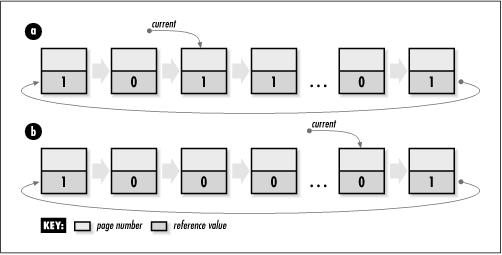

5.11 Circular List Example:
Second-Chance Page Replacement
Earlier we saw how a singly-linked list
might be used to manage frame allocation in a virtual memory system. One issue not addressed,
however, was how a system allocates new frames when the list
of available frames is empty. To deal with this, a system
frees a frame by moving a page from physical memory to a disk
called a swap disk. The system
uses a page-replacement
algorithm to determine which
frame is best to free at a given moment. One example of a
page-replacement algorithm is the second-chance algorithm, sometimes
called the clock algorithm.
Ideally, it would be great if all pages of a
process resided in physical memory at once, but usually this
is not possible. Typically, many processes may be running on a
system simultaneously, all competing for its physical memory.
Sometimes even a single process may have such a large address
space that it cannot fit itself into physical memory. Faced
with having to replace a page at some point, then, it should
seem reasonable that the best page for a system to replace is
the one that it will not access for the longest time to come.
However, since it can't predict the future, a system sometimes
uses an assumption that the past will be a reasonable
indication of the future and replaces the page that has been
accessed least recently. This is known as least recently used, or LRU, page replacement.
The second-chance algorithm is one approach
to implementing an LRU page-replacement scheme. It works by
maintaining a circular list of pages that are currently in
physical memory. For simplicity, consider each element in the
list to store only a page number and a reference value, which
is set to either 1 or 0. In practice, each element contains
other information as well. All pages initially have a
reference value of 0. Whenever the page is accessed by the
system (as in a process reading from or writing to the page,
for example), its reference value is set to 1.
When a frame is needed, the system uses the
circular list and the reference values it maintains to
determine which page should give up its frame. To determine
this, it moves through the list until it finds a reference
value of 0. As it traverses each page, the system resets the
page's reference value from 1 to 0. Once it encounters a 0, it
has found a page that has not been accessed by the system
since the last cycle through the list; thus, it is the page
least recently used. This page is then replaced in physical
memory with the new page, and the new page is inserted in
place of the old one in the list. If all pages have been
accessed since the algorithm was last run, the system ends up
making a complete cycle through the list and replaces the page
at which it started.
The example here is an implementation of this
page-replacement strategy. It uses a function called replace_ page (see Examples Example
5.8 and Example
5.9). The function accepts a single argument called
current, which points to the element of a
circular list containing the page at which to begin searching
(see Figure
5.8). As the list is traversed, the algorithm inspects the
reference member of the Page structure stored in each element to
determine whether it is 1 or 0. If it is 1, it resets it to
and goes to the next page; if it is 0, it has found the page
to replace. Eventually, if all pages have been traversed, the
circular nature of the list will land the algorithm back on
the page at which it began. This time the page's reference
value will be (because it was reset when it was first
encountered), and it is returned as the page to be replaced.
Upon return, current points to the page at
which the search ended. This becomes the page at which to
begin the next time a frame is neededA circular list models
this problem nicely because it allows a system to cycle
through pages just as the algorithm requires. The runtime
complexity of replace_page is
O (n), where n is the number of pages in the
circular list. This is because, in the worst case, the
algorithm may need to make a complete cycle through the list
to find the page to replace. .
Example 5.8.
Implementation of Second-Chance Page Replacement /*****************************************************************************
* *
* -------------------------------- page.c -------------------------------- *
* *
*****************************************************************************/
#include "clist.h"
#include "page.h"
/*****************************************************************************
* *
* ----------------------------- replace_page ----------------------------- *
* *
*****************************************************************************/
int replace_page(CListElmt **current) {
/*****************************************************************************
* *
* Circle through the list of pages until one is found to replace. *
* *
*****************************************************************************/
while (((Page *)(*current)->data)->reference != 0) {
((Page *)(*current)->data)->reference = 0;
*current = clist_next(*current);
}
return ((Page *)(*current)->data)->number;
}
Example 5.9.
Header for Second-Chance Page Replacement /*****************************************************************************
* *
* -------------------------------- page.h -------------------------------- *
* *
*****************************************************************************/
#ifndef PAGE_H
#define PAGE_H
#include "clist.h"
/*****************************************************************************
* *
* Define a structure for information about pages. *
* *
*****************************************************************************/
typedef struct Page_ {
int number;
int reference;
} Page;
/*****************************************************************************
* *
* --------------------------- Public Interface --------------------------- *
* *
*****************************************************************************/
int replace_page(CListElmt **current);
#endif
 |